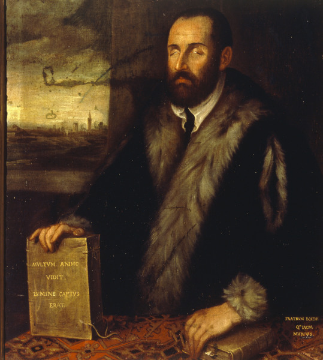
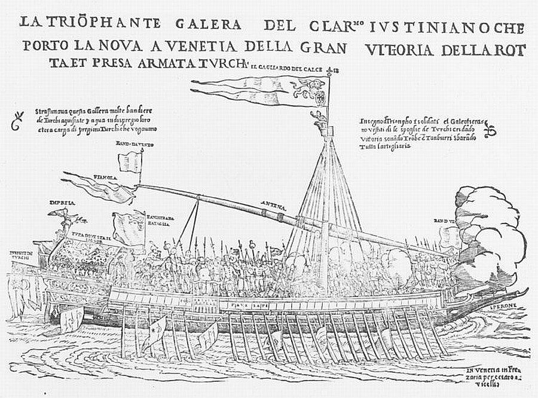

Победа при Лепанто: прибытие известия в Венецию
И, глаза ослепленно зажмуря,
Их раскрыла, ― и в пламени был ―
Нет, не солнце, ― небесная буря,
Горний ветер, гонец, Гавриил.
Л. Алексеева. Благовещение . Цит. по ruscorpora.ru
Любой человек, который хоть немного погружался в историю, с уверенностью скажет, что победители в сражении при Лепанто 1571 года всячески прославляли битву и ее героев, а побежденные как могли замалчивали ее. И все же при всей очевидности этой оценки имелись некоторые интересные моменты, которые заслуживают отдельного упоминания.
Венеция, в которой были сконцентрированы основные издательские и типографские мощности тогдашней Европы, задала тон в освещении битвы, привлекая для этого деятелей всех видов печатного и изобразительного творчества. Венецианские авторы не использовали для обозначения битвы название «сражение при Лепанто». Для них Лепанто – это всего лишь небольшой захваченный турками пункт, где османский флот базировался перед баталией и куда укрылись остатки турецкого флота после разгрома. Поэтому если у венецианских писателей и встречалось слово «Лепанто», то лишь для обозначения турецкой стороны в сражении. Венецианцы называли битву «сражением при Курцолари» по имени группы островков и рифов в Патрасском заливе, неподалеку от которых произошло это событие. Мы уже отмечали, что в настоящее время и островки, и отмели превратились в часть греческого материка.
Подобно тому, как сегодня блогеры подхватывают и распространяют все более или менее общественно значимые известия, в Венеции XVI века существовал достаточно широкий круг лиц, которые считали себя хронистами, самопровозглашенными историками, несущими информацию в массы. К этому кругу примыкали и многочисленные поэты, во весь голос прославлявшие (или проклинавшие) злободневные события эпохи и их деятелей.
О том, как весть о победе пришла в Венецию мы узнаём от «Слепца Адрии», знаменитого слепого оратора, поэта, лютниста, драматурга и актёра Луиджи Грото (1541–1585), который описал это событие в письме к своему другу Ротилио Ловато.

Портрет Луиджи Грото кисти Тинторетто
19 октября 1571 года Грото прибыл в Венецию по делам епископата Адрии и был приглашен дожем на аудиенцию. «Внезапно, – пишет Грото, – раздались несколько пушечных выстрелов и глашатаи объявили о радостном событии – победе христиан над мусульманским флотом. Все тут же выскочили на улицу, где влились в ликующую толпу.»
Появление в Венеции гонца с благой вестью (по замечательному совпадению, известие было доставлено на галере, носящей название L’ange Gabriel – «Ангел Гавриил») стало следствием неповиновения командующего венецианским контингентом флота Святой Лиги Себастьяна Веньера приказу Дона Хуана Австрийского, который считал, что он и только он должнен оповестить правителей государств-членов Лиги о победе. Но неистовый старикан Веньер не послушался молодого Главнокомандующего и послал в столицу Светлейшей три галеры под командованием Онфре Джустиниана с письмом к Сенату об одержанной победе ("con lettere al Senato del felice successo eh' egli conosceva dalla man di Dio.", как пишет историк битвы Контарини в своей Historia). Именно Джустиниан возвестил о победе, прибыв в порт Венеции в 19.00 19 октября 1571 года (через двенадцать дней после сражения; по другим источникам это событие произошло в 11.00, но принципиально это дела не меняет) . Именно пушки с прибывших галер оповестили народ Венеции о победе; галеры еще не пришвартовались, но по тому, как за их кормой по воде тащили турецкие штандарты было ясно: победа.

Прибытие галеры Джустиниана в Венецию с сообщением о победе при Лепанто.
Но масштабы победы стали ясны лишь после передачи письма Веньера дожу и личного доклада Джустиниана. Толпа на площади Св.Марка пришла в экстаз. Все магазины, лавки, конторы закрылись. Все должники были выпущены из тюрем. Толпа пела Te Deum laudamus («Тебя, Бога, хвалим» ). Дож и члены Совета перешли в собор Св.Марка в сопровождении послов всех стран-участниц Лиги. Онфре Джустиниан был произведен в рыцари. За благую весть, им принесенную, на него возложили золотую цепь стоимостью 500 скуди.
Известие о победе при Лепанто полетело во все европейские страны.